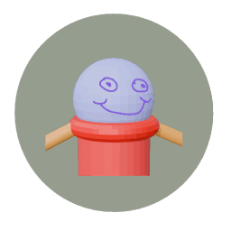
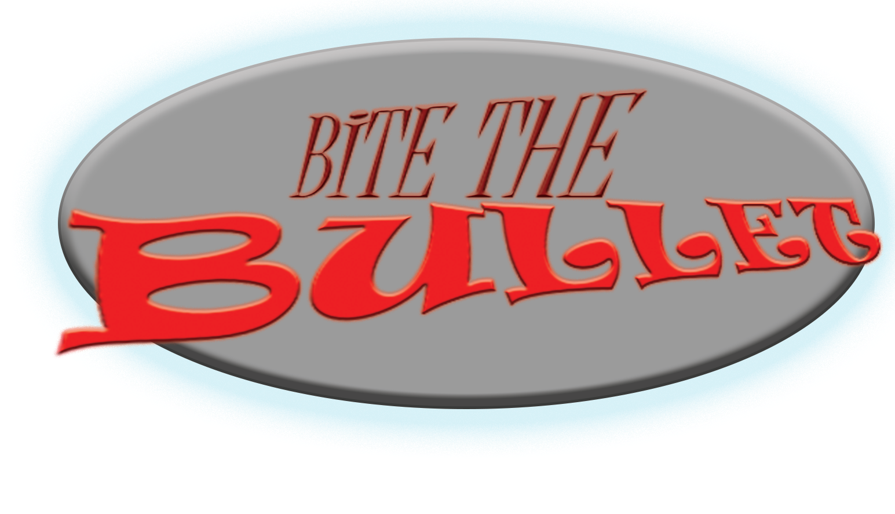

PROJECTS/EXPERIENCE

A MATTER OF PERSPECTIVE
A Matter of Perspective was a game jointly created by myself and Patrick Kopp for the ISU Creative Jam 2025. Shockingly, despite us having only 48 hours to attempt to make a complete game, something neither of us had ever done before, it ended up winning the video games category.
After the Creative Jam concluded, Patrick and I decided to greatly expand the game for a showcase run through the Creative Technologies department at Illinois State University. We expanded the original ~1.25 levels into 5, greatly improved the story, added a variety of new mechanics and enemies, and encountered many issues we had to overcome along the way. The final version of the game will hopefully be released very soon.
In A Matter of Perspective, you control the lovable goober "Goobo" as he embarks on a journey to defeat the King of the Glorbles, who has destroyed Goobo's home and all other members of the goober species.
Click the image to go to the A Matter of Perspective page.

BITE THE BULLET
Bite the Bullet is a card game made for the Game Design I course at Illinois State University. It is a 4-7 player version of Russian Roulette on every steroid known to man. The Gun is a set of Bullet cards with different effects, and each player has an inventory of Action cards, all of which can help or hurt them or their opponents. The goal is to be the last person alive and to survive all of the chaos. It was specifically designed to be as customizable as possible to create whatever gameplay experience you want.
Click the image to go to the Bite the Bullet game page.

A MATTER OF PERSPECTIVE (ORIGINAL GAME SOUNDTRACK)
Every game needs a soundtrack, and A Matter of Perspective was no exception. As Patrick and I were developing the game, I was also working on the music tracks for the game. A friend of mine also wanted to make some music for it, so he also created a few tracks. Roughly, it amounted out to around 40 minutes of music, and I got to rework a lot of pieces of music that I wrote some time ago.
Click the image to go to the album's Spotify page.